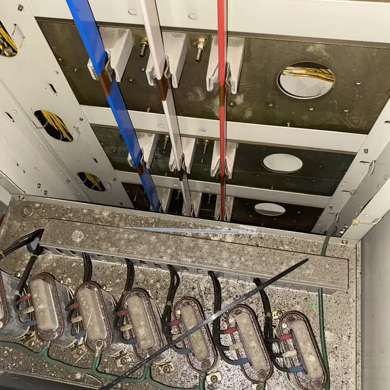
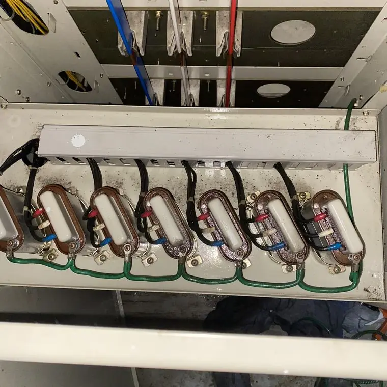
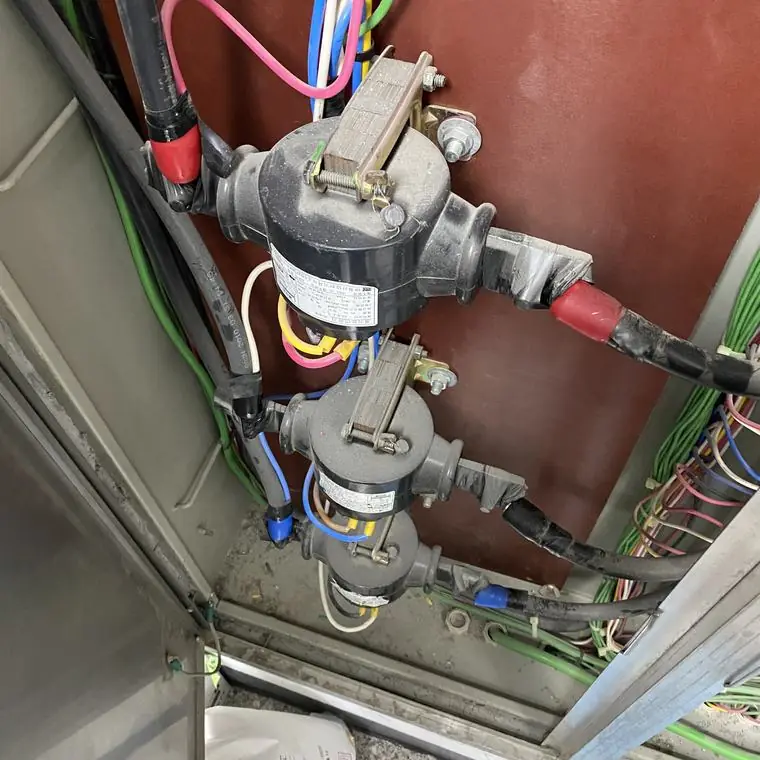
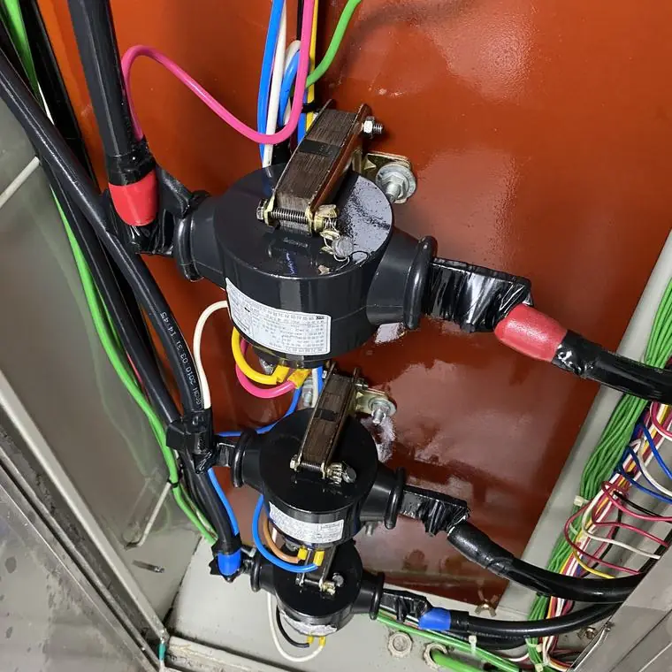

제어반·MCC반·인버터 판넬은 어떻게 청소하나요?
최종 수정 2026-10-25
제어반, MCC반, 인버터 판넬, 분전함에는 기판, 릴레이, 접점처럼 정밀한 부품이 많아 먼지가 접촉 불량과 열화의 원인이 될 수 있습니다. 시공 업체는 생산용 제어반은 1~2년 주기 클리닝을 권장합니다. 에어건으로 먼지를 날리는 방식은 부품 손상과 먼지 재유입에 주의해야 합니다.
왜 먼지가 문제가 되나요?
- 접점, 릴레이, 커넥터에 먼지가 끼면 접촉 불량과 열화가 생길 수 있습니다.
- 금속성 먼지와 습기는 누전, 합선, 부식의 원인이 될 수 있습니다.
- 인버터처럼 열이 나는 모듈에 먼지가 쌓이면 발열이 늘 수 있습니다.


어떤 방식으로 청소하나요?
정밀 전자장비와 제어 유닛은 저압용 분사 장비로, 대용량 판넬과 모터는 고압용 분사 장비로 대응합니다. 분사 세정은 기판과 배선 사이의 좁은 틈까지 닿는 것이 장점으로 설명됩니다.
얼마나 자주 하나요?
시공 업체는 생산용 제어반은 1~2년 주기를 권장합니다. 먼지가 많은 환경이나 가동이 멈추면 피해가 큰 설비는 더 짧게 보기도 합니다.
직접 청소할 때 주의할 점
전기설비를 직접 물이나 일반 세제로 청소하는 것은 감전·단락 위험이 있어 권하지 않습니다. 반드시 전문 업체와 전기안전관리자에게 먼저 확인하세요. 특히 에어건은 먼지를 판넬 안쪽으로 밀어 넣거나 정전기로 부품을 손상시킬 수 있습니다.


자주 묻는 질문
제어반 청소 주기는 어떻게 되나요?
시공 업체는 생산용 제어반은 1~2년 주기를 권장합니다. 환경에 따라 달라질 수 있습니다.
에어건으로 먼지를 불어도 되나요?
먼지가 안쪽으로 들어가거나 정전기로 부품이 손상될 수 있어 주의가 필요합니다. 전문 업체와 상담하세요.
설비 사진과 정보를 남기시면 확인 후 견적을 안내해 드립니다.
무료 견적 문의하기이 글은 시공 업체가 공개한 자료와 일반적인 전기설비 관리 상식을 바탕으로 작성했습니다. 설비별 적용 여부와 결과는 현장 확인 후 달라질 수 있습니다.